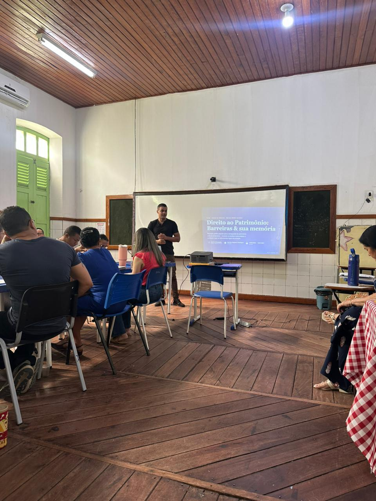

V Mostra de Extensão da UFOB – ano 2026
Resumo: Objetivos: Promover educação jurídica popular sobre os instrumentos de proteção do patrimônio cultural; mapear bens culturais materiais e imateriais de Barreiras; aproximar a universidade dos detentores de saberes, da comunidade escolar e do poder público; e produzir subsídios para uma cartilha digital sobre direitos culturais e salvaguarda. Justificativa: Barreiras possui bens culturais materiais — como a Catedral São João Batista, o Frontispício do Antigo Paço Municipal, casarios históricos e pontes — e manifestações culturais imateriais, entre elas a Folia de Reis, a Festa do Rio Grande, a Romaria do Senhor dos Aflitos e os festejos juninos. O projeto parte da necessidade de ampliar o conhecimento da população sobre os direitos culturais e sobre os instrumentos jurídicos de proteção, considerando que, entre os bens materiais inicialmente mapeados, apenas o Frontispício possui proteção formal identificada. Fundamentação teórica: A ação articula educação patrimonial, educação jurídica popular e pesquisa-ação participante, com base em Freire (1968) e Thiollent (2011), além dos arts. 215 e 216 da Constituição Federal de 1988, do Decreto-Lei nº 25/1937 e do Decreto nº 3.551/2000. Metodologia: A execução compreende pesquisa documental e bibliográfica; mapeamento e fichamento dos bens; registro e análise das situações de proteção jurídica; entrevistas com detentores de saberes; articulação com órgãos públicos e escola parceira; oficinas participativas; produção de cartilha digital; e devolutiva à comunidade. Atividades realizadas: Foram concluídas as fichas de mapeamento dos cinco bens materiais inicialmente trabalhados: Catedral São João Batista, Frontispício do Antigo Paço Municipal, casarios históricos neoclássicos, Ponte Ciro Pedrosa e Ponte Aylon Macedo. Também foram realizadas entrevistas com detentores vinculados à Folia de Reis, à Festa do Rio Grande, aos festejos juninos e à Romaria do Senhor dos Aflitos. O projeto articulou parcerias com a Secretaria Municipal de Cultura e Turismo e a Secretaria Municipal de Educação, definiu como escola parceira a Escola Municipal Dr. José da Costa Borges e realizou, em 3 de setembro de 2026, reunião de apresentação do projeto ao corpo de ensino da escola. Conclusões: O trabalho realizado até o momento demonstra que o mapeamento associado à educação jurídica popular pode transformar informações legais em instrumento de participação social. As fichas, os relatos orais e as articulações institucionais constituem base para as próximas etapas do projeto — oficinas, cartilha digital e devolutiva comunitária — sem apresentar essas etapas como concluídas.

Figura 1 – Reunião de apresentação do projeto Direito ao Patrimônio ao corpo de ensino da Escola Municipal Dr. José da Costa Borges, escola parceira, Barreiras-BA, 3 set. 2026. Foto encaminhada pela diretora da escola.
Palavras-chave: Direito ao patrimônio. Educação jurídica popular. Patrimônio cultural.
Financiamento/bolsa: Bolsa financiada pelo Edital Programa Extensão, Cultura e Arte — Edital PROEC/UFOB nº 05/2026.
BRASIL. Constituição da República Federativa do Brasil de 1988. Brasília, 1988.
BRASIL. Decreto-Lei nº 25, de 30 de novembro de 1937. Organiza a proteção do patrimônio histórico e artístico nacional. Rio de Janeiro, 1937.
BRASIL. Decreto nº 3.551, de 4 de agosto de 2000. Institui o Registro de Bens Culturais de Natureza Imaterial. Brasília, 2000.
FREIRE, Paulo. Pedagogia do oprimido. Rio de Janeiro: Paz e Terra, 1968.
THIOLLENT, Michel. Metodologia da pesquisa-ação. 18. ed. São Paulo: Cortez, 2011.